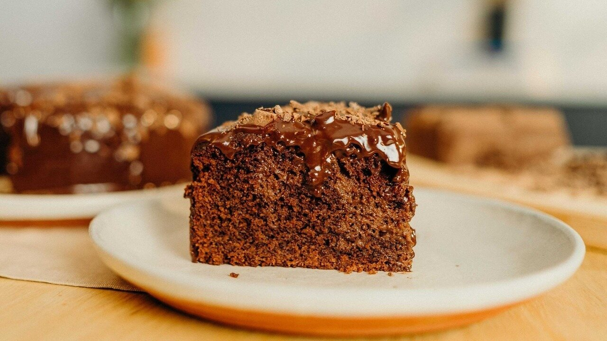

BOLO DE CHOCOLATE

Descrição
O bolo de chocolate é uma sobremesa clássica e irresistível, perfeita para qualquer ocasião. Macio, úmido e com um sabor marcante, ele agrada a todos.
Esta receita ensina como preparar um bolo de chocolate simples e delicioso, com ingredientes básicos e cobertura cremosa.
Ingredientes
- 3 ovos
- 1 xícara de leite
- 1/2 xícara de óleo
- 1 e 1/2 xícara de açúcar
- 1 xícara de chocolate em pó
- 2 xícaras de farinha de trigo
- 1 colher de sopa de fermento em pó
Passos
- Preaqueça o forno a 180 °C e unte uma forma com manteiga e farinha.
- No liquidificador, bata os ovos, o leite, o óleo, o açúcar e o chocolate em pó.
- Transfira para uma tigela e misture a farinha de trigo aos poucos.
- Adicione o fermento e misture levemente.
- Despeje na forma e leve ao forno por cerca de 35 a 40 minutos.
- Deixe esfriar e, se desejar, cubra com ganache de chocolate.
Voltar ao Início